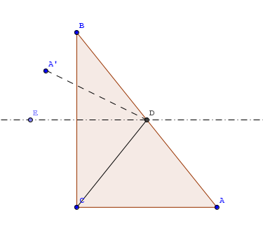

general
-
version1.3.5
-
把cmder添加到系统环境变量, 即windows下的path.
-
添加鼠标右键及删除
- 添加右键:
Cmder.exe /REGISTER ALL - 删除右键: 新建一文件
*.bat, 内容如下:
- 添加右键:
@echo off Reg delete "HKEY_LOCAL_MACHINE\SOFTWARE\Classes\Directory\Background\shell\Cmder" /f pause
-
打开设置界面: win+alt+p
-
文字重叠问题: 设置界面 > main > main console font > monospce, 去掉勾.
-
修改命令提示符号λ 修改文件 ${CMDER_HOME}\vendor\clink.lua
if env == nil then lambda = "λ" else lambda = "("..env..") λ" end
改为:
if env == nil then lambda = "$" else lambda = "("..env..") $" end
注: 1.3以后版本如此, 之前是之前的改法.
-
ls中文乱码
Startup > Environment > Set up environment variables 添加set LANG=zh_CN.UTF8, 重启cmder.- 命令行下, locale查看是否成功.
- 注意要在适当的地方加上分号, 否则重启后添加的代码就消失了. 但这不是此法失效的理由, 换成
set LC_ALL=zh-CN.UTF8也没用. (2018-03-21) - 代码未必消失, 大概是没有保存好, 动作太快了. 反正莫名其妙就好了. 奇葩. (2018-03-21)
- 在
C:\Program Files\cmder\vendor\conemu-maximus5\ConEmu.xml中的<value name="EnvironmentSet" type="multi">下一行, 直接添加代码<line data="set LANG=zh_CN.UTF-8"/>. 其他修改类似. (2018-03-22)
-
设置alias: 修改config/user-aliases.cmd文件. 比如:
st="C:\Program Files\Sublime Text 3\sublime_text.exe", 意味在cmder中输入st即可打开sublime text. -
sublime中打开cmder
- 安装插件terminal
- 设置terminal, 在Preferences->Package Settings->Terminal->Settings-User中，输入下面内容
{ // 输入cmder路径 "terminal": "C:\\program files\\cmder\\Cmder.exe", // 通过设置自定义快捷键，使用命令"open_terminal" 或者 // "open_terminal_project_folder"打开终端 "parameters": ["/START","%CWD%"] }
* 自定义打开终端快捷键: Preferences->Key Bindings - User，输入下面内容
{ "keys": ["ctrl+alt+t"],"command": "open_terminal"}
参考
cmder & cygwin 中文支持解决方案, 神器 cmder
chocolatey
chocolatey 就是 ubuntu 中的 apt-get, mac下的brew.
安装:
@powershell -NoProfile -ExecutionPolicy unrestricted -Command "iex ((new-object net.webclient).DownloadString('https://chocolatey.org/install.ps1'))" && SET PATH=%PATH%;%ALLUSERSPROFILE%\chocolatey\bin
安装软件命令 choco install softwareName，短写是 cinst softwareName.